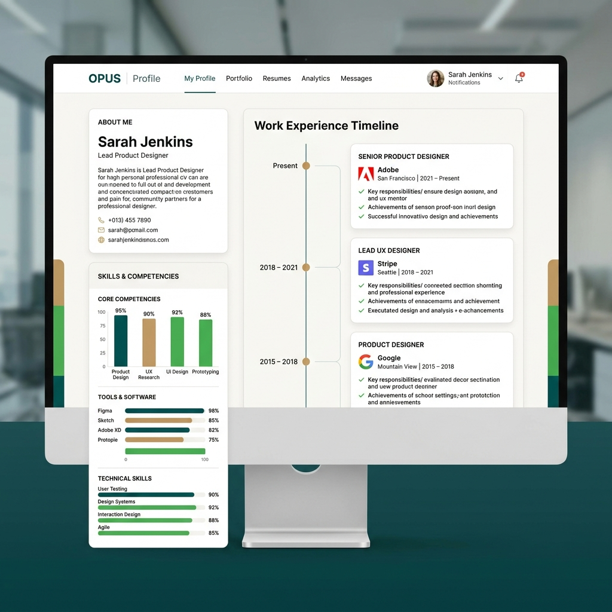

1. Breve descripción de la actividad
La aplicación web Alke Web CV fue diseñada para centralizar y presentar la trayectoria profesional y técnica de manera dinámica. Es una plataforma moderna que reemplaza el clásico currículum estático por una solución web interactiva.
2. Desafío principal
El mayor obstáculo enfrentado fue transicionar de un código diseñado para un entorno de desarrollo local hacia una arquitectura robusta apta para su despliegue en producción (deployment), evitando problemas comunes de rutas absolutas y entornos de ejecución divergentes.
3. Solución propuesta
Decidí llevar a cabo una refactorización profunda del código fuente, que incluyó la limpieza estricta de dependencias y la optimización del manejo de activos estáticos. Se ajustó la configuración del proyecto para asegurar su completa compatibilidad con servidores de producción modernos.
4. Herramientas técnicas utilizadas
- Python para la lógica dinámica de backend y scripts de manejo.
- Bootstrap 5 para la estructura visual y responsividad inmediata.
- Git para el control riguroso de versiones.
- Herramientas de automatización de entorno para simplificar despliegues.
5. Principales aprendizajes
Esta experiencia reforzó la importancia crítica de separar configuraciones por entornos (dev/prod) y me enseñó las mejores prácticas respecto a cómo estructurar los archivos de un proyecto para asegurar pipeline de despliegues continuos sin fricciones.
6. Métricas de impacto
- Reducción visual del tiempo de carga inicial de recursos.
- Despliegue exitoso con 0 errores de referencia registrados tras el pase a producción.
7. Habilidades técnicas aplicadas
8. Justificación de la elección
He seleccionado este proyecto como caso de estudio principal porque es el que mejor representa mi crecimiento profesional integral. Elevar un producto digital desde una simple prueba local hasta alcanzar estándares de mercado listos para presentación al cliente final requiere una mentalidad enfocada a la calidad y la escalabilidad, virtudes que busco proyectar como desarrollador.